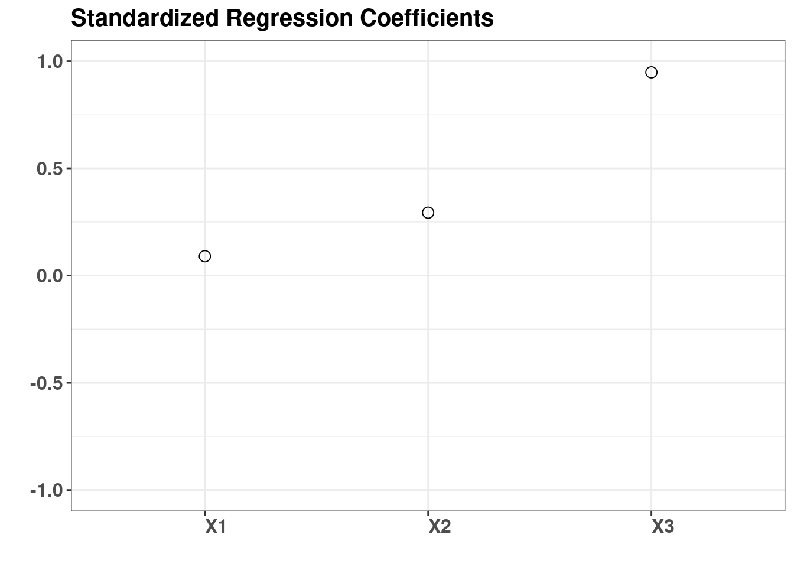

library(ggplot2)
library(pander)
if(!require(sensitivity)){
install.packages("sensitivity")
library(sensitivity)
}Standardized Regression Coefficients (SRC), or the Standardized Rank Regression Coefficients (SRRC), which are sensitivity indices based on linear or monotonic assumptions in the case of independent factors.
n <- 100
X <- data.frame(X1 = runif(n, 0.5, 1.5),
X2 = runif(n, 1.5, 4.5),
X3 = runif(n, 4.5, 13.5))
# linear model : Y = X1 + X2 + X3
y <- with(X, X1 + X2 + X3)
Z <- src(X, y, rank = FALSE, logistic = FALSE, nboot = 0, conf = 0.95)
pander(Z$SRC,caption = "Standardized Regression Coefficients ")| original | |
|---|---|
| X1 | 0.09946 |
| X2 | 0.3092 |
| X3 | 0.9596 |
y <- with(X, X1 + X2 + X3)
y <- y + rnorm(nrow(X),0,1/2)
df<- data.frame(cbind(X,y))
Z <- src(X, y, rank = FALSE, logistic = FALSE, nboot = 0, conf = 0.95)
pander(Z$SRC,caption = "Standardized Regression Coefficients ")| original | |
|---|---|
| X1 | 0.09029 |
| X2 | 0.2935 |
| X3 | 0.9479 |

We see how the importance of X3 is ranked above X2 and likewise X2 is more important than X1. This is by design of the simulated data set. The standardized regression coefficients (beta coefficients) are calculated from that has been standardized, let’s normalize and calculate the regression to see if indeed that is the case.
dfs<- data.frame(scale(df,center = TRUE,scale = TRUE))
lm.fit = lm(y ~ X1+X2+X3,data = dfs)
summary(lm.fit)##
## Call:
## lm(formula = y ~ X1 + X2 + X3, data = dfs)
##
## Residuals:
## Min 1Q Median 3Q Max
## -0.52040 -0.09289 0.00344 0.12156 0.35064
##
## Coefficients:
## Estimate Std. Error t value Pr(>|t|)
## (Intercept) -4.776e-17 1.806e-02 0.000 1
## X1 9.029e-02 1.824e-02 4.951 3.15e-06 ***
## X2 2.935e-01 1.818e-02 16.147 < 2e-16 ***
## X3 9.479e-01 1.821e-02 52.039 < 2e-16 ***
## ---
## Signif. codes: 0 '***' 0.001 '**' 0.01 '*' 0.05 '.' 0.1 ' ' 1
##
## Residual standard error: 0.1806 on 96 degrees of freedom
## Multiple R-squared: 0.9684, Adjusted R-squared: 0.9674
## F-statistic: 980.3 on 3 and 96 DF, p-value: < 2.2e-16We see that the values are very close.